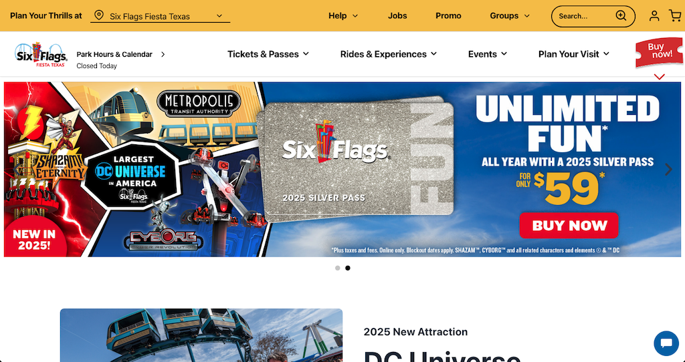
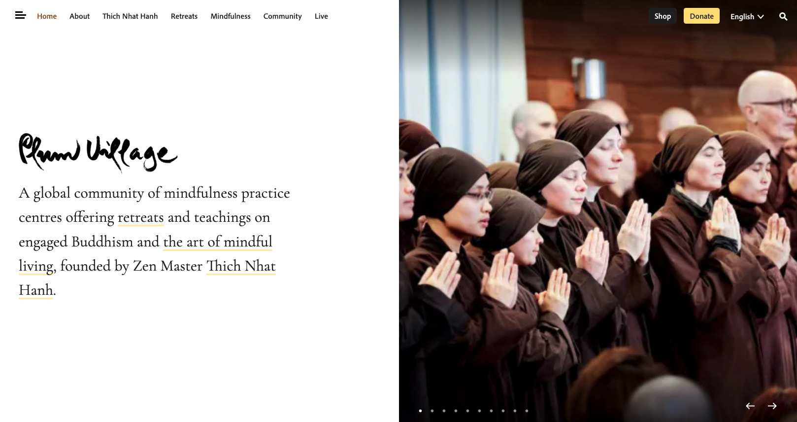

The Importance of Color in Web Design.
Color plays a crucial role in web design, influencing user perception, brand identity, and usability. A well-chosen color scheme enhances the user experience, improves readability, and helps guide visitors through a website. Here’s why color matters in web design:
Establishes Brand Identity & Recognition.
- Colors are directly associated with brand personality and emotional appeal. Many companies use consistent color schemes to build strong recognition.
- Colors evoke different emotions and affect how users feel when interacting with a website.
- Red: Passion, urgency, action (Used for sales, alerts, or excitement).
- Blue: Trust, calmness, professionalism (Popular in finance & corporate sites).
- Green: Nature, growth, health (Common in eco-friendly or wellness brands).
- Yellow: Optimism, warmth, attention-grabbing (Great for cheerful brands).
- Black: Luxury, sophistication, power (Used in high-end & fashion websites).
Color is not just an aesthetic choice. It plays a critical role in web design by influencing brand perception, user emotions, readability, navigation, and conversions. A well-thought-out color scheme enhances usability, improves engagement, and strengthens a brand’s identity.
Examples of Websites and Their Use of Colors:
Click on the image below to go to the website:
The Six Flags Fiesta Texas website employs a vibrant and dynamic color scheme that reflects the exhilarating experience of the amusement park. The primary colors used are bold reds, energetic yellows, and deep blues, which not only capture attention but also evoke feelings of excitement and adventure. The design is strategically organized to highlight key attractions and events. High-contrast color combinations are utilized to ensure readability and to draw attention to important elements such as call-to-action buttons and promotional banners. For instance, the use of bright colors against darker backgrounds helps essential information stand out, guiding users effectively through the site.
The website also integrates thematic elements that resonate with the park's diverse attractions. Each section of the park has its own unique theme, celebrating various cultural and historical aspects, which is subtly mirrored in the website's design through the use of complementary color palettes and imagery. Overall, the color implementation and design of the Six Flags Fiesta Texas website are thoughtfully crafted to provide an engaging and user-friendly experience, aligning with the park's brand identity and the thrilling adventures it offers.
Click on the image below to go to the website:
The Plum Village website embraces a calm, serene, and minimalist design that aligns perfectly with its focus on mindfulness and meditation. The color implementation, design, and visual aspects are intentionally crafted to reflect tranquility, simplicity, and spiritual harmony. The website primarily utilizes soft, earthy tones such as beige, light brown, and muted greens. These colors are associated with nature, peace, and mindfulness, reinforcing the teachings of Zen Buddhism. The restrained use of vibrant colors helps maintain a soothing aesthetic, preventing any visual distractions and allowing visitors to focus on the content.
The design of the Plum Village website follows a minimalist and user-friendly approach, emphasizing clarity and accessibility. Whitespace Usage: There is a generous amount of whitespace (empty areas around text and images), which enhances readability and contributes to a sense of peace and openness. The Plum Village website successfully conveys a peaceful and welcoming atmosphere through its well-thought-out color scheme, minimalist design, and mindful visual elements. Unlike commercial websites, which rely on high-contrast visuals and attention-grabbing elements, Plum Village prioritizes simplicity, clarity, and emotional warmth, making it an effective platform for those seeking a refuge in mindfulness and meditation.
What's wrong with this following website:
Click on the image below to go to the website:
The Daily Mail website is an example of a news website that prioritizes information density over visual aesthetics. While it is designed to deliver large amounts of content quickly, its color choices and overall design can lead to an overwhelming and cluttered user experience. The website heavily relies on strong blues and reds for headlines, links, and call-to-action buttons. While blue is a common choice for links, the high saturation and excessive usage create a harsh contrast, making the site visually aggressive rather than engaging.
There is no clear color hierarchy that guides the reader’s eye. Different sections use various shades of blue, gray, red, and black, making it hard to distinguish primary content from secondary content at first glance. Advertisements, images, and headlines compete for attention rather than complementing each other.
The website follows an outdated tabloid-style design with too many headlines, images, and links crammed together. The homepage presents an overwhelming amount of information all at once, making it difficult for users to focus on any one story. Some sections use light gray backgrounds with black text, which reduces readability, especially for long articles. There are too many banner ads, autoplay videos, and pop-ups, which disrupt the reading experience. These elements cause visual noise, making it hard to differentiate between genuine news content and sponsored content.